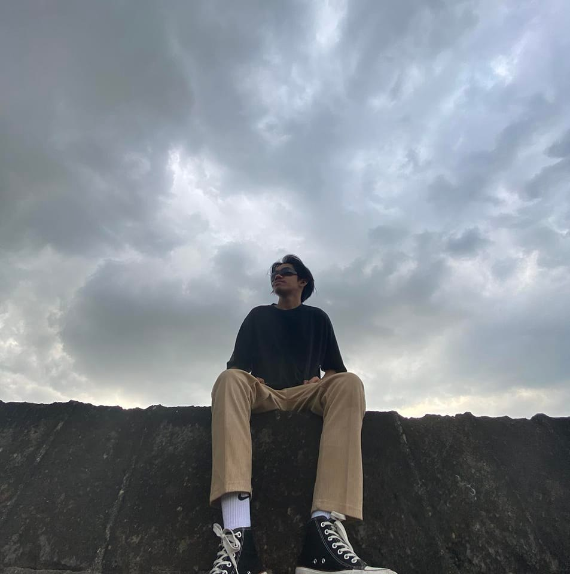
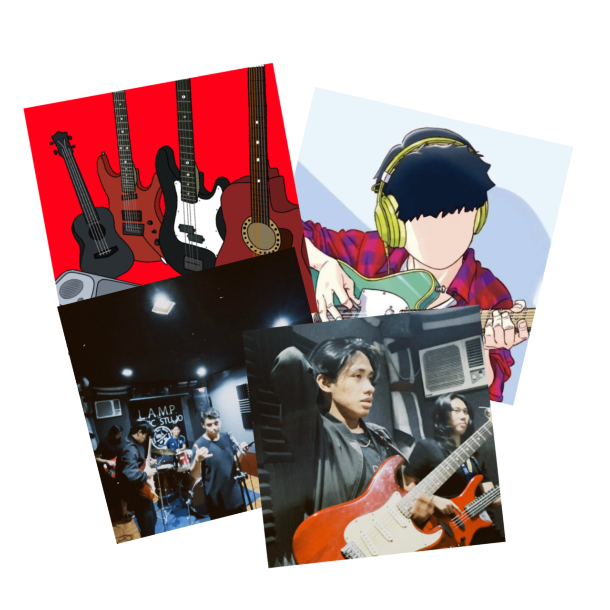

|  |
Hi there! I'm Stephen David Q. Condino a passionate and motivated IT student eager to delve into the exciting world of technology. Currently pursuing my degree in BSIT at National Teacher's College, I am constantly seeking opportunities to expand my knowledge and skills in various areas of information technology. My journey into the realm of IT began with a fascination for computers and how they work. As I progressed through my studies, I discovered my interest in software development, cybersecurity, and data analysis. From coding algorithms to securing networks, I find joy in solving complex problems and implementing innovative solutions. Outside of academics, I enjoy participating in tech-related projects and hackathons, where I collaborate with like-minded individuals to create impactful solutions. Additionally, I stay updated with the latest trends and advancements in the IT industry through online courses, forums, and tech communities. With a strong foundation in programming languages such as Java, Python, and C++, along with hands-on experience in database management and web development, I am excited to embark on a career that allows me to make a meaningful contribution to the ever-evolving field of technology. In my free time, you can find me experimenting with new coding projects, exploring the latest gadgets, or simply immersing myself in a good book on technology and innovation. I am enthusiastic about the endless possibilities that technology offers and look forward to leveraging my skills to create positive change in the world. Feel free to connect with me on Social Media Accounts to discuss all things tech or collaborate on exciting projects. Let's innovate and make a difference together! |
My Hobbies and Passion in Life |
||
|  |
My hobbies if I had free time I played online games and interact other people and I love being talkative most of a time. The main reason why I love to play games is it kills my boresome and helps me to improve my communicating skills to other player. These are my most played games all the time:
|
|
Also if I want to be off in social media, my spare time or "me-time" was playing my instruments, I also loved to play instruments and sometime if I had a whole day schdeule-free is I do some gigs or some special occasion such as Playing in Fiesta, in Bar, Birthdays, etc... These are my currently instuments:
Lastly, if I had mood to learn, I explore some programming languages and studying and gain enough knowledge, I love to learn more in coding, it improve my skill in logic, and be resourceful. That's all, Thank you. |

|
|